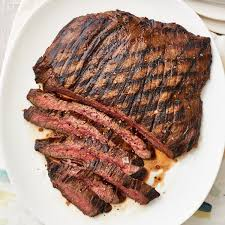

Steak

Description
Steak with seasonings.
Ingredients
- Beef Tenderloin
- Montreal Steak seasoning
Steps
- Heat grill pan to medium.
- Season both sides and place in grill pan.
- Sear on all sides, use tongs to hold the steak to sear the edges.
- Then allow to cook an equal time on each side.
- Remove from pan and let rest on plate for a few minutes.
- Serve and enjoy!